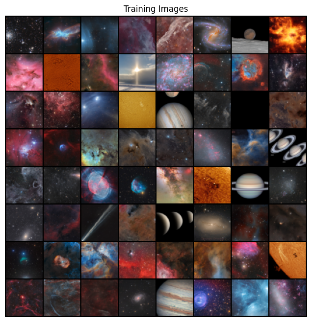
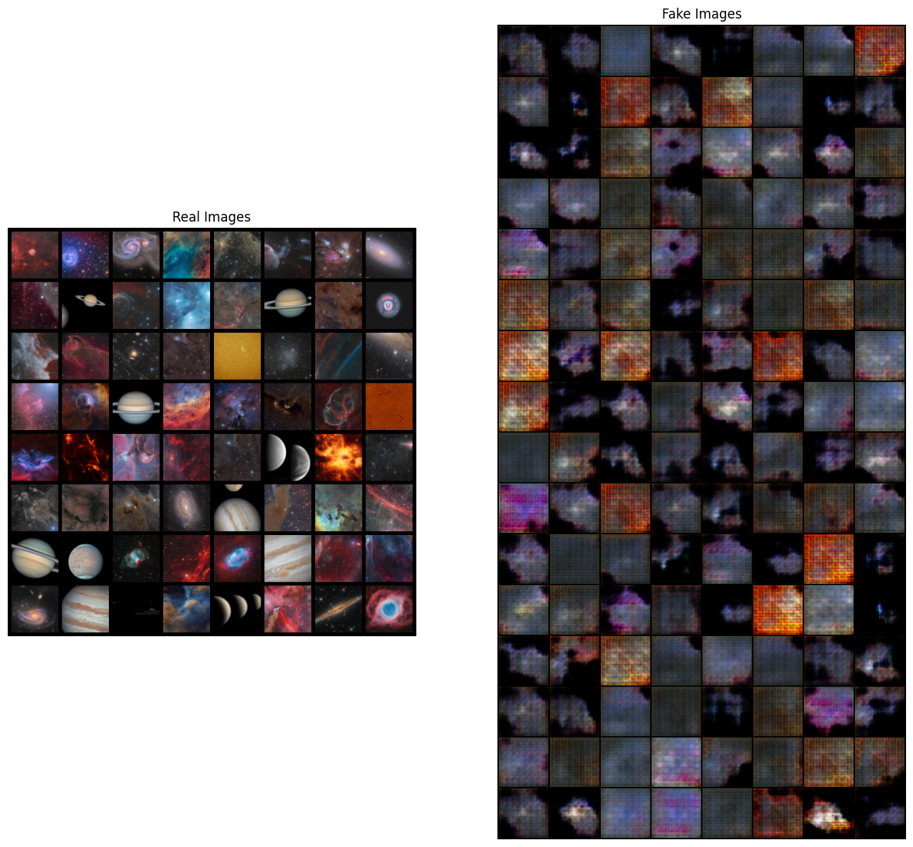
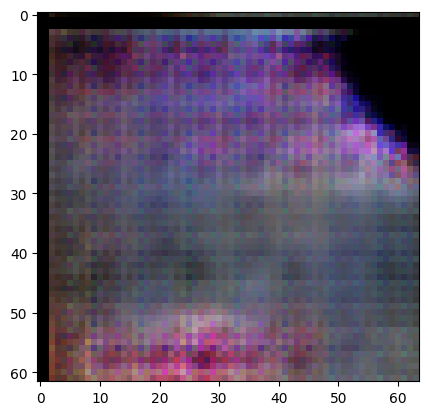
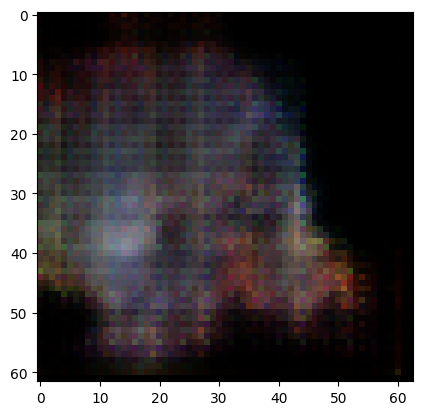
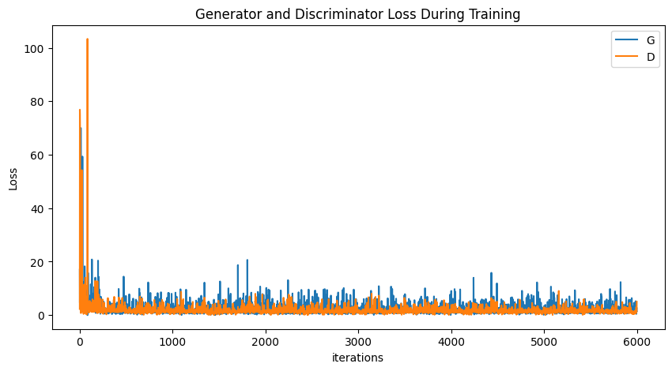

In this post, we will explore how I utilize DCGAN to generate synthetic images of deep space objects. Employing PyTorch, we implement a straightforward DCGAN model. Our objective is to train a neural network capable of producing deep space objects images. This serves as a post in practical work on using DCGAN and continuation of previous post where we learn the mathematics behind the beauty of GAN.
What is DCGAN
DCGAN, short for Deep Convolutional Generative Adversarial Network, is a specialized variant within the broader category of Generative Adversarial Networks (GANs). While both DCGAN and GAN share the core principle of adversarial training, where a generator network competes with a discriminator network to create realistic images, they primarily differ in their architectural design. DCGANs use deep convolutional neural networks (CNNs) in both the generator and discriminator components, enabling the effective learning of hierarchical representations in image data. This architectural choice enables DCGANs to generate higher-quality images with finer details compared to traditional GANs, which typically rely on fully connected layers. In my previous post, I explored into the mathematical aspects of GANs. Given the differing architectures, there are variations in the mathematical framework between DCGAN and GAN. Nevertheless, the main goal remains the same: to illustrate the concept of GANs in generating synthetic images.
Setup
Here are the dependencies and libraries that I used for this project.
# Import necessary libraries
import os
import random
import torch
import torch.nn as nn
import torch.nn.parallel
import torch.backends.cudnn as cudnn
import torch.optim as optim
import torch.utils.data
import torchvision.datasets as dset
import torchvision.transforms as transforms
import torchvision.utils as vutils
import numpy as np
import matplotlib.pyplot as plt
import matplotlib.animation as animation
from IPython.display import HTML
from PIL import Image
# Set matplotlib to inline mode
%matplotlib inline
# Set random seed for reproducibility
manualSeed = 42
# manualSeed = random.randint(1, 10000) # Use if you want new results
print("Random Seed: ", manualSeed)
# Set random seed for Python, Torch
random.seed(manualSeed)
torch.manual_seed(manualSeed)Configurations
Here are the configurations applied for the project. This includes the parameters of the convolutional layers, such as the dimensionality of images, the number of color channels, and the size of the latent dimension.
# Batch size during training
batch_size = 64
# Spatial size of training images. All images will be resized to this size using a transformer.
image_size = 64
# Number of channels in the training images. For color images this is 3
nc = 3
# Size of z latent vector (i.e. size of generator input)
nz = 5
# Size of feature maps in generator
ngf = 128
# Size of feature maps in discriminator
ndf = 128We can also configure the training parameters. This includes the number of epochs we want to train the GAN (which I set to 1000 epochs), learning rate and model hyperparameter.
# Number of training epochs
num_epochs = 1000
# Learning rate for optimizers
lr = 0.0004
# Beta1 hyperparam for Adam optimizers
beta1 = 0.5
# Number of GPUs available. Use 0 for CPU mode.
ngpu = 1Dataset Preparation
I have prepared a sample dataset for this project, consisting of 322 deep space object images. It is a small dataset, ideally you will need more than that for better result. For the sake of this demonstration, we will just stick with this dataset. The dataset is hosted on Kaggle, and you can access it here. To prepare our dataset, we will build a Data Loader. A Data Loader is essentially a class that aids in shuffling and organizing the data into minibatches. This is particularly helpful considering that our dataset may consume a large amount of memory during training. By utilizing a Data Loader, we can efficiently load samples determined by the batch size from the entire dataset iteratively. When all the samples in the entire dataset have been loaded into the model once, it is referred to as one epoch.
# Root directory for dataset
dataroot = "/kaggle/input/astrophotography-collection/"
# Create the dataset
dataset = dset.ImageFolder(root=dataroot,
transform=transforms.Compose([
transforms.Resize(image_size),
transforms.CenterCrop(image_size),
transforms.ToTensor(),
transforms.Normalize((0.5, 0.5, 0.5), (0.5, 0.5, 0.5)),
]))
# Create the dataloader
dataloader = torch.utils.data.DataLoader(dataset, batch_size=batch_size,
shuffle=True, num_workers=workers)
# Decide which device we want to run on
device = torch.device("cuda:0" if (torch.cuda.is_available() and ngpu > 0) else "cpu")We can view the our prepared training dataset by plotting some of our training images.
# Plot some training images
real_batch = next(iter(dataloader))
plt.figure(figsize=(8,8))
plt.axis("off")
plt.title("Training Images")
plt.imshow(np.transpose(vutils.make_grid(real_batch[0].to(device)[:64], padding=2, normalize=True).cpu(),(1,2,0)))
Building the Model
As I mentioned in my previous post, GANs are composed of two models, a generator and a discriminator. The task of the generator is to generate fake images whereas the task of the discriminator is to distinguish the fake from the true. In other words, a GAN is a two models that involves in an internal game between two adversarial parties each trying their best to accomplish their task. As this competition progresses, the generator becomes increasingly better at generating fake images and the discriminator also starts to get better and determining the fake from the generated images.
Initialize the Weights
Let us define the custom weights for our layers. We define a function weigths_init to initialize the weights of our neural network layers. This function is applied to both the generator \(('netG')\) and the discriminator \(('netD')\).
# custom weights initialization called on netG and netD
def weights_init(m):
classname = m.__class__.__name__
if classname.find('Conv') != -1:
nn.init.normal_(m.weight.data, 0.0, 0.02)
elif classname.find('BatchNorm') != -1:
nn.init.normal_(m.weight.data, 1.0, 0.02)
nn.init.constant_(m.bias.data, 0)Build the Generator
Let’s construct the generator model for our GAN. We begin by defining the Generator class, which comprises functions that return the following neural network architecture:
class Generator(nn.Module):
def __init__(self, ngpu):
super(Generator, self).__init__()
self.ngpu = ngpu
self.main = nn.Sequential(
# input is Z, going into a convolution
nn.ConvTranspose2d( nz, ngf * 8, 4, 1, 0, bias=False),
nn.BatchNorm2d(ngf * 8),
nn.ReLU(True),
# state size. (ngf*8) x 4 x 4
nn.ConvTranspose2d(ngf * 8, ngf * 4, 4, 2, 1, bias=False),
nn.BatchNorm2d(ngf * 4),
nn.ReLU(True),
# state size. (ngf*4) x 8 x 8
nn.ConvTranspose2d( ngf * 4, ngf * 2, 4, 2, 1, bias=False),
nn.BatchNorm2d(ngf * 2),
nn.ReLU(True),
# state size. (ngf*2) x 16 x 16
nn.ConvTranspose2d( ngf * 2, ngf, 4, 2, 1, bias=False),
nn.BatchNorm2d(ngf),
nn.ReLU(True),
# state size. (ngf) x 32 x 32
nn.ConvTranspose2d( ngf, nc, 4, 2, 1, bias=False),
nn.Tanh()
# state size. (nc) x 64 x 64
)
def forward(self, input):
return self.main(input)Next, we instantiate the Generator class and apply the custom weight initialization defined in the weights_init function to the layers of our generator:
# Create the generator
netG = Generator(ngpu).to(device)
# Handle multi-gpu if desired
if (device.type == 'cuda') and (ngpu > 1):
netG = nn.DataParallel(netG, list(range(ngpu)))
# Apply the weights_init function to randomly initialize all weights to mean=0, stdev=0.02.
netG.apply(weights_init)
# Print the model
print(netG)Let us visualize the architecture of our generator model:
Generator(
(main): Sequential(
(0): ConvTranspose2d(5, 1024, kernel_size=(4, 4), stride=(1, 1), bias=False)
(1): BatchNorm2d(1024, eps=1e-05, momentum=0.1, affine=True, track_running_stats=True)
(2): ReLU(inplace=True)
(3): ConvTranspose2d(1024, 512, kernel_size=(4, 4), stride=(2, 2), padding=(1, 1), bias=False)
(4): BatchNorm2d(512, eps=1e-05, momentum=0.1, affine=True, track_running_stats=True)
(5): ReLU(inplace=True)
(6): ConvTranspose2d(512, 256, kernel_size=(4, 4), stride=(2, 2), padding=(1, 1), bias=False)
(7): BatchNorm2d(256, eps=1e-05, momentum=0.1, affine=True, track_running_stats=True)
(8): ReLU(inplace=True)
(9): ConvTranspose2d(256, 128, kernel_size=(4, 4), stride=(2, 2), padding=(1, 1), bias=False)
(10): BatchNorm2d(128, eps=1e-05, momentum=0.1, affine=True, track_running_stats=True)
(11): ReLU(inplace=True)
(12): ConvTranspose2d(128, 3, kernel_size=(4, 4), stride=(2, 2), padding=(1, 1), bias=False)
(13): Tanh()
)
)Build the Discriminator
Let’s build a corresponding discriminator class for our GAN. The discriminator is essentially a simple binary classifier that decides whether a given image is real or fake. If we examine the final output layer, we will see one neuron with a sigmoid activation function.
class Discriminator(nn.Module):
def __init__(self, ngpu):
super(Discriminator, self).__init__()
self.ngpu = ngpu
self.main = nn.Sequential(
# input is (nc) x 64 x 64
nn.Conv2d(nc, ndf, 4, 2, 1, bias=False),
nn.LeakyReLU(0.2, inplace=True),
# state size. (ndf) x 32 x 32
nn.Conv2d(ndf, ndf * 2, 4, 2, 1, bias=False),
nn.BatchNorm2d(ndf * 2),
nn.LeakyReLU(0.2, inplace=True),
# state size. (ndf*2) x 16 x 16
nn.Conv2d(ndf * 2, ndf * 4, 4, 2, 1, bias=False),
nn.BatchNorm2d(ndf * 4),
nn.LeakyReLU(0.2, inplace=True),
# state size. (ndf*4) x 8 x 8
nn.Conv2d(ndf * 4, ndf * 8, 4, 2, 1, bias=False),
nn.BatchNorm2d(ndf * 8),
nn.LeakyReLU(0.2, inplace=True),
# state size. (ndf*8) x 4 x 4
nn.Conv2d(ndf * 8, 1, 4, 1, 0, bias=False),
nn.Sigmoid()
)
def forward(self, input):
return self.main(input)Next, we instantiate the Discriminator class and apply the custom weight initialization defined in the weights_init function to the layers of our discriminator:
# Create the Discriminator
netD = Discriminator(ngpu).to(device)
# Handle multi-gpu if desired
if (device.type == 'cuda') and (ngpu > 1):
netD = nn.DataParallel(netD, list(range(ngpu)))
# Apply the weights_init function to randomly initialize all weights
# to mean=0, stdev=0.2.
netD.apply(weights_init)
# Print the model
print(netD)Let us visualize the architecture of our discriminator model:
Discriminator(
(main): Sequential(
(0): Conv2d(3, 128, kernel_size=(4, 4), stride=(2, 2), padding=(1, 1), bias=False)
(1): LeakyReLU(negative_slope=0.2, inplace=True)
(2): Conv2d(128, 256, kernel_size=(4, 4), stride=(2, 2), padding=(1, 1), bias=False)
(3): BatchNorm2d(256, eps=1e-05, momentum=0.1, affine=True, track_running_stats=True)
(4): LeakyReLU(negative_slope=0.2, inplace=True)
(5): Conv2d(256, 512, kernel_size=(4, 4), stride=(2, 2), padding=(1, 1), bias=False)
(6): BatchNorm2d(512, eps=1e-05, momentum=0.1, affine=True, track_running_stats=True)
(7): LeakyReLU(negative_slope=0.2, inplace=True)
(8): Conv2d(512, 1024, kernel_size=(4, 4), stride=(2, 2), padding=(1, 1), bias=False)
(9): BatchNorm2d(1024, eps=1e-05, momentum=0.1, affine=True, track_running_stats=True)
(10): LeakyReLU(negative_slope=0.2, inplace=True)
(11): Conv2d(1024, 1, kernel_size=(4, 4), stride=(1, 1), bias=False)
(12): Sigmoid()
)
)Initializing Loss Function and Optimizers
Now, we set up crucial components for training our GAN. First, we initialize the Binary Cross Entropy (BCE) loss function \(('criterion')\) using PyTorch’s nn.BCELoss(). This function will help us measure the difference between predicted and target values during training. Additionally, we create a batch of latent vectors \(('fixed\_noise')\) to visualize the progression of the generator throughout training. These vectors will serve as input for generating fake images. Moreover, we establish the convention for labeling real and fake samples during training, assigning a label of 1.0 for real samples and 0.0 for fake ones (\(('real\_label')\) and \(('fake\_label')\) respectively). Finally, we set up Adam optimizers for both the generator and discriminator (\(('optimizerG')\) and \(('optimizerD')\)). These optimizers will adjust the model’s parameters during training to minimize the loss and improve performance.
# Initialize BCELoss function
criterion = nn.BCELoss()
# Create batch of latent vectors that we will use to visualize the progression of the generator
fixed_noise = torch.randn(128, nz, 1, 1, device=device)
# Establish convention for real and fake labels during training
real_label = 1.
fake_label = 0.
# Setup Adam optimizers for both G and D
optimizerD = optim.Adam(netD.parameters(), lr=lr, betas=(beta1, 0.999))
optimizerG = optim.Adam(netG.parameters(), lr=lr, betas=(beta1, 0.999))Model Training
Now that we have both the discriminator and the generator in place, it is time to establish the connection between them to build our GAN. We define the training loop for our GAN model. We initialize lists to keep track of the progress, including images generated during training \(('img\_list')\) and losses for both the generator and discriminator (\('G_losses'\) and \('D_losses'\), respectively). The training loop iterates over each epoch, with each epoch consisting of batches from the data loader.
During each iteration, we update the discriminator \(('netD')\) and generator \(('netG')\) networks alternatively to optimize their performance. For the discriminator, we aim to maximize the probability of correctly classifying real and fake images, while for the generator, we aim to maximize the probability of the discriminator being fooled by the generated images.
Training progresses by updating the discriminator’s parameters based on the gradients of its loss \(('errD')\) calculated from both real and fake samples. Similarly, the generator’s parameters are updated based on the gradients of its loss \(('errG')\) calculated from the discriminator’s response to generated images.
Throughout training, we monitor and output the losses for both networks, as well as other relevant statistics. Additionally, we periodically save the generated images for visualization and analysis.
# Training Loop
# Lists to keep track of progress
img_list = []
G_losses = []
D_losses = []
iters = 0
print("Starting Training Loop...")
# For each epoch
for epoch in range(num_epochs):
# For each batch in the dataloader
for i, data in enumerate(dataloader, 0):
############################
# (1) Update D network: maximize log(D(x)) + log(1 - D(G(z)))
###########################
## Train with all-real batch
netD.zero_grad()
# Format batch
real_cpu = data[0].to(device)
b_size = real_cpu.size(0)
# Forward pass real batch through D
output = netD(real_cpu).view(-1)
label = torch.full((output.size(0),), real_label, dtype=torch.float, device=device)
# Calculate loss on all-real batch
errD_real = criterion(output, label)
# Calculate gradients for D in backward pass
errD_real.backward()
D_x = output.mean().item()
## Train with all-fake batch
# Generate batch of latent vectors
noise = torch.randn(output.size(0), nz, 1, 1, device=device)
# Generate fake image batch with G
fake = netG(noise)
label.fill_(fake_label)
# Classify all fake batch with D
output = netD(fake.detach()).view(-1)
# Calculate D's loss on the all-fake batch
errD_fake = criterion(output, label)
# Calculate the gradients for this batch, accumulated (summed) with previous gradients
errD_fake.backward()
D_G_z1 = output.mean().item()
# Compute error of D as sum over the fake and the real batches
errD = errD_real + errD_fake
# Update D
optimizerD.step()
############################
# (2) Update G network: maximize log(D(G(z)))
###########################
netG.zero_grad()
label.fill_(real_label) # fake labels are real for generator cost
# Since we just updated D, perform another forward pass of all-fake batch through D
output = netD(fake).view(-1)
# Calculate G's loss based on this output
errG = criterion(output, label)
# Calculate gradients for G
errG.backward()
D_G_z2 = output.mean().item()
# Update G
optimizerG.step()
# Output training stats
if i % 50 == 0:
print('[%d/%d][%d/%d]\tLoss_D: %.4f\tLoss_G: %.4f\tD(x): %.4f\tD(G(z)): %.4f / %.4f'
% (epoch+1, num_epochs, i, len(dataloader),
errD.item(), errG.item(), D_x, D_G_z1, D_G_z2))
# Save Losses for plotting later
G_losses.append(errG.item())
D_losses.append(errD.item())
# Check how the generator is doing by saving G's output on fixed_noise
if (iters % 100 == 0) or ((epoch == num_epochs-1) and (i == len(dataloader)-1)):
with torch.no_grad():
fake = netG(fixed_noise).detach().cpu()
img_list.append(vutils.make_grid(fake, padding=2, normalize=True))
iters += 1Examine the training log:
Starting Training Loop...
[1/1000][0/6] Loss_D: 2.2758 Loss_G: 17.0022 D(x): 0.2834 D(G(z)): 0.3927 / 0.0010
[2/1000][0/6] Loss_D: 44.7588 Loss_G: 25.3654 D(x): 0.6291 D(G(z)): 0.7448 / 0.0186
[3/1000][0/6] Loss_D: 17.9932 Loss_G: 40.2899 D(x): 0.0010 D(G(z)): 0.0000 / 0.0000
[4/1000][0/6] Loss_D: 21.4372 Loss_G: 12.6890 D(x): 0.1892 D(G(z)): 0.2395 / 0.1450
[5/1000][0/6] Loss_D: 25.8914 Loss_G: 10.6171 D(x): 0.3253 D(G(z)): 0.2953 / 0.2394
[6/1000][0/6] Loss_D: 5.2777 Loss_G: 11.2162 D(x): 0.0964 D(G(z)): 0.0000 / 0.1247
'''
'''
<output truncated>
'''
'''
[993/1000][0/6] Loss_D: 1.3663 Loss_G: 1.0782 D(x): 0.5472 D(G(z)): 0.4720 / 0.3682
[994/1000][0/6] Loss_D: 1.1256 Loss_G: 0.9345 D(x): 0.5948 D(G(z)): 0.4337 / 0.3996
[995/1000][0/6] Loss_D: 1.0744 Loss_G: 1.1576 D(x): 0.5452 D(G(z)): 0.3503 / 0.3248
[996/1000][0/6] Loss_D: 1.3176 Loss_G: 1.2700 D(x): 0.4744 D(G(z)): 0.2765 / 0.3008
[997/1000][0/6] Loss_D: 1.5503 Loss_G: 0.8097 D(x): 0.8141 D(G(z)): 0.6486 / 0.4586
[998/1000][0/6] Loss_D: 1.2623 Loss_G: 1.3359 D(x): 0.5421 D(G(z)): 0.3986 / 0.3066
[999/1000][0/6] Loss_D: 1.0057 Loss_G: 2.4666 D(x): 0.4860 D(G(z)): 0.1747 / 0.1328
[1000/1000][0/6] Loss_D: 2.3245 Loss_G: 0.4596 D(x): 0.7497 D(G(z)): 0.6979 / 0.6514For each iteration, the log reports the discriminator \(('Loss\_D')\) and generator \(('Loss_G')\) losses, as well as the discriminator’s accuracy in classifying real samples \(('D(x)')\) and generated samples \(('D(G(z))')\). These metrics provide a comprehensive view of the GAN’s performance, with the discriminator task is to distinguish between real and fake images while the generator aims to produce images that deceive the discriminator.
During the training process, fluctuations in both the losses and accuracy metrics are frequently observed, indicating the dynamic nature of the adversarial learning process. This phenomenon is commonplace in GAN training, which is known for its complexity, since it requires balancing the performance of the generator and the discriminator in such a way that one does not dominate over the other. This is referred to as a min-max game in game theory terms, and finding an equilibrium in such structures are known to be difficult.
Initially, the losses may be high and fluctuate widely as the networks learn to adapt to the data distribution. However, as training progresses, convergence towards lower losses and improved accuracy is expected, indicating that the generator is producing more realistic images and the discriminator is becoming more better in judging the generated images.
Result
Let’s take a look at the results now that the iterations are over.
# Grab a batch of real images from the dataloader
real_batch = next(iter(dataloader))
# Plot the real images
plt.figure(figsize=(15,15))
plt.subplot(1,2,1)
plt.axis("off")
plt.title("Real Images")
plt.imshow(np.transpose(vutils.make_grid(real_batch[0].to(device)[:64], padding=5, normalize=True).cpu(),(1,2,0)))
# Plot the fake images from the last epoch
plt.subplot(1,2,2)
plt.axis("off")
plt.title("Fake Images")
plt.imshow(np.transpose(img_list[-1],(1,2,0)))
plt.show()
The generated images exhibit fuzziness, pixelation, and in some cases, they are indistinguishable. Nonetheless, upon closer inspection, some of the images are actually resemble gaseous nebula. To illustrate, we can visualize individual results.
plt.imshow(np.transpose(img_list[-1],(1,2,0))[64*4+7:64*5+5, :64, :])
# Modify the code to change to another image

Considering the simplicity of our network’s structure and the limited size of our dataset, I consider this a successful demonstration of the GAN’s capabilities.
Now, let’s examine the learning curve of the GAN.
plt.figure(figsize=(10,5))
plt.title("Generator and Discriminator Loss During Training")
plt.plot(G_losses,label="G")
plt.plot(D_losses,label="D")
plt.xlabel("iterations")
plt.ylabel("Loss")
plt.legend()
plt.show()
The loss curve exhibits a highly erratic and spiky nature, which presents a challenge in determining the optimal stopping point for GAN training. Unlike classical deep learning training, where we typically observe a gradual decrease in loss until it plateaus upon convergence, the behavior of a GAN’s loss curve is less predictable. There are clear signs of failure, such as one component’s loss diverging exponentially from its counterpart, fortunately this scenario did not happen here. In this case, I allowed the training to continue until reaching the specified number of iterations. As demonstrated by the results above, our task did not encounter failure.
I prepared a Kaggle notebook if you want to reproduce the result. Kaggle Notebook.